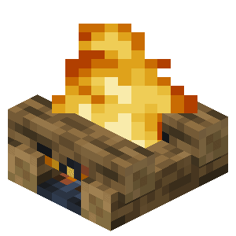

Campfire Streamlined LAN Hosting for Minecraft Players
Both players install the mod, share an invite code, and connect directly — no port forwarding, no rented servers, no extra configuration.

Open your world. Share the code. Play together.
Features
Built for seamless multiplayer sessions without subscriptions or port forwarding.
P2P World Hosting
Open any singleplayer world to friends over the internet or LAN instantly with UPnP and direct TCP relaying.
Instant Invite Codes
Generate clean codes like CAMP-XXXXX-XXXXX that friends paste straight into their multiplayer screen.
Live Friend Presence
Track real-time status — In Menu, Singleplayer, Hosting, Multiplayer — with one-click joining.
Screenshot HUD Toasts
Capture memories in game with instant UI toasts and automatic clipboard copying for local sharing.
How It Works & Installation
Get up and running in under a minute with Java 21 and Fabric Loader.
1. Install the Mod
Drop the Campfire JAR into the mods folder on both PCs — host and friends.
2. Host Your World
Open your singleplayer world and click Host on the Campfire menu.
3. Share & Play
Send the invite code to your friends. They enter it and join directly — no port forwarding.
Build from Source
git clone https://github.com/wayback09/Campfire.git
cd Campfire
./gradlew :mod:fabric:buildSecurity & Privacy
Your worlds belong to you, we dont collect any data.
No Paid Cosmetics
No microtransactions, no storefronts, and no hidden subscriptions. Completely free and open-source.
Local Screenshots
All captured moments stay on your machine. No telemetry or data collection.
FAQ’s
Common questions about Campfire hosting.
What is Campfire?
Campfire is a free, open-source peer-to-peer world hosting and social mod for Minecraft that lets you host LAN worlds online without port forwarding.
Do my friends need the mod installed?
Yes — both the host and joining players need Campfire installed on the same Minecraft version. The invite code handling and connection logic run on both clients.
Is Campfire free to use?
Yes, Campfire is 100% free and open-source under the GNU GPL-3.0 license with no paid tiers or microtransactions.
Do I need port forwarding?
No port forwarding is required. Campfire automatically attempts UPnP port opening and falls back to a lightweight TCP relay when necessary.
Ready to Play?
Download the latest release or check out the source code on GitHub.